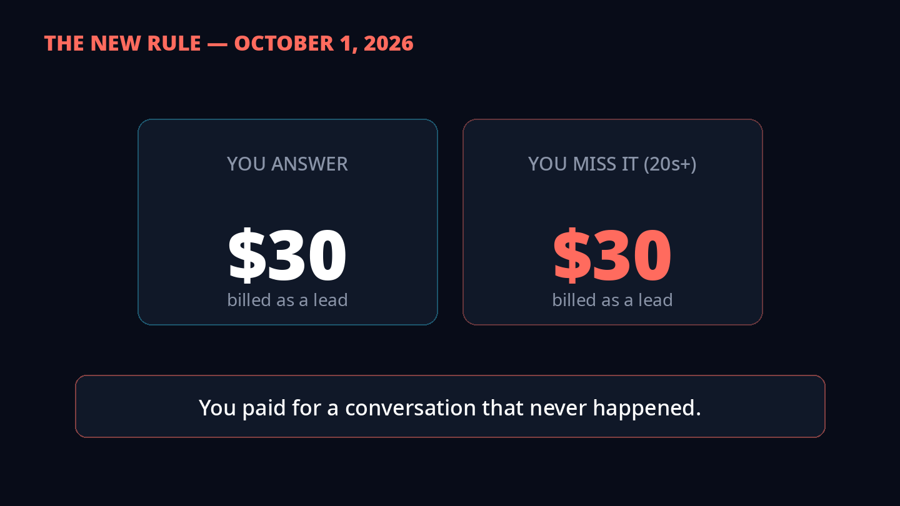
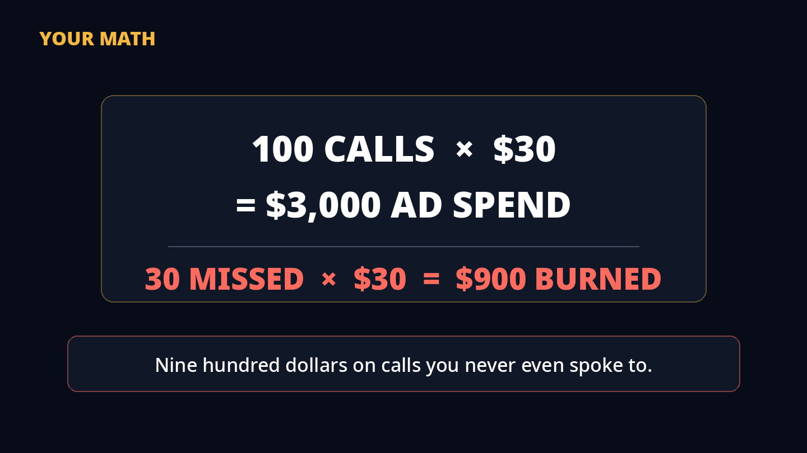
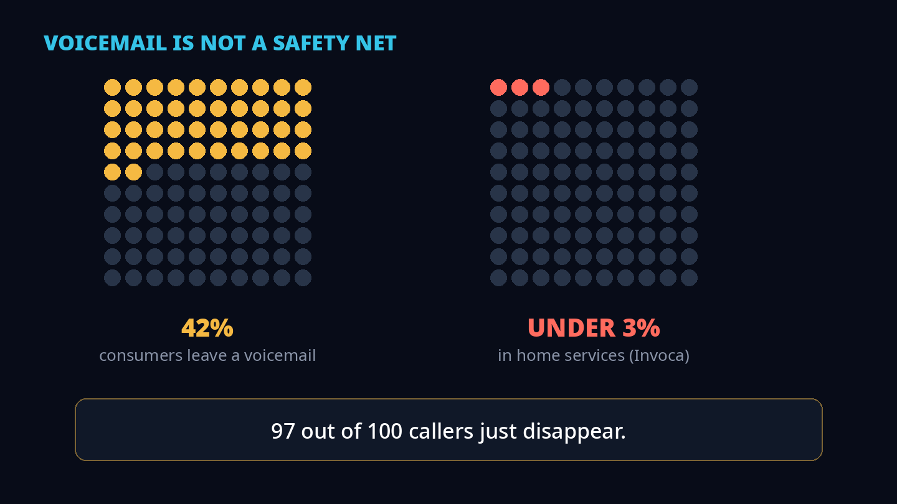
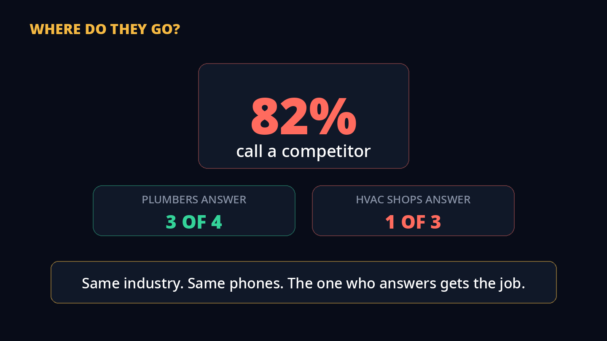
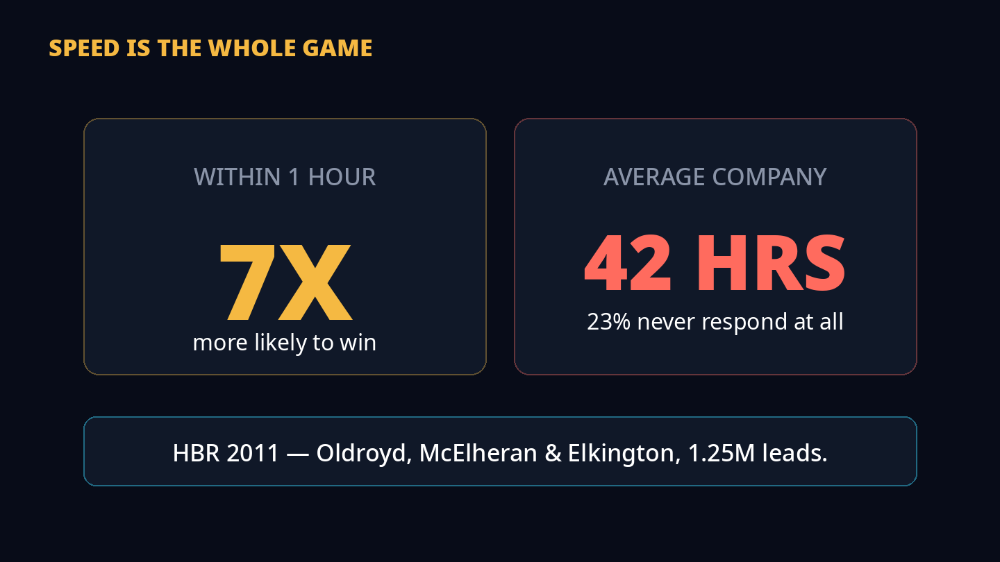
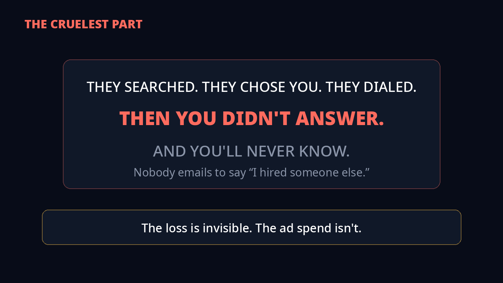
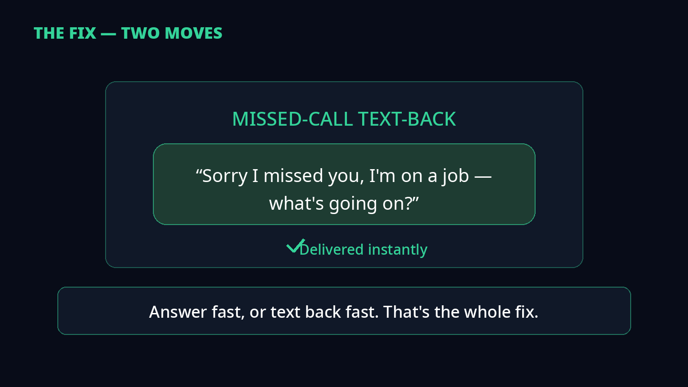
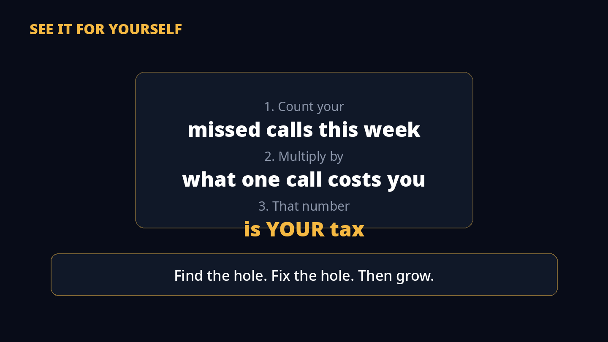

You paid for that call. You just didn't answer it. Let me show you the most expensive tax in your business — and nobody sends you a bill for it.
1The new rule

Here's how it works. A customer calls you from a Local Services Ad. You answer, you talk — Google charges you for the lead. Let's say $30. Fair.
But since October 1, 2026, here's the new rule: if you DON'T answer, and the caller just stays on the line 20 seconds listening to it ring — Google charges you anyway. Same $30.
2Your math

So let's do your math. Let's say a hundred calls come in this month, and each call costs you $30 from ads. That's $3,000.
Now let's say you miss 30 of those calls. You're on a job. It's after hours. The line's busy. Thirty missed calls times $30 — that's $900 you spent on calls you never even spoke to.
3Voicemail is dead

"But they'll leave a voicemail," right? No. They won't. CallRail surveyed 1,000 consumers in 2025: only 42% leave a voicemail. In home services, Invoca's data puts it under 3%.
Three percent. Ninety-seven out of a hundred callers just... disappear.
4They call the competitor

Where do they go? To the next name on Google. That same CallRail survey: 82% call a competitor after you don't pick up.
And here's the kicker — Invoca looked at 70 million calls. Plumbers answer 3 out of 4. HVAC shops answer 1 in 3. Same industry. Same phones. The one who answers gets the job.
5Speed is the whole game

Researchers at Harvard Business Review — Oldroyd, McElheran, Elkington — studied over a million leads. Reach the lead within an hour, and you're 7 times more likely to turn it into a real customer.
Seven times. But the average company takes 42 hours to respond. And 23% never respond at all. Your customer has a burst pipe. They're not waiting 42 hours.
6The invisible loss

And here's the cruelest part. A missed call is the only lead that arrives already sold. They searched. They chose YOUR number. They dialed. Then you didn't answer... and they dialed the competitor.
And you'll never know. Nobody emails you to say "I hired someone else."
7The fix — two moves

So what do you do? Two things. First — if a marketer tells you to spend MORE on ads while you miss a third of your calls, I'd walk away. More calls into a missed-call problem is just a bigger tax. Fix the phone first. Then buy more calls.
Second — set up a missed-call text-back. The second you miss a call, the customer gets a text: "Sorry I missed you, I'm on a job — what's going on?" One contractor put it perfectly: it keeps the lead warm without you touching your phone with dusty hands.
8Your move

One thing worth doing this week: count your missed calls. Your phone already tracks them. Multiply that number by what one call costs you.
That's your tax. Now you can see it for yourself.
Find the hole.Fix the hole.Then grow.
Sources
Every number in this video comes from a named source:
- CallRail, 2025 — 1,000 US consumers: 78% abandon after an unanswered call, 82% call a competitor, 42% leave a voicemail.
- Invoca, 2026 — 70M+ calls: 56% answered overall; home services 52%; plumbing 74%, HVAC 34%.
- ServiceTitan, 2022 — 3,000+ trades businesses: shops with <5 techs book 24% of calls vs 59% for 25+ tech shops.
- BT-commissioned research, 2026 — 67% of small businesses miss at least one money call per day.
- Harvard Business Review, 2011 — Oldroyd, McElheran & Elkington: 1-hour response ≈ 7x more likely to qualify the lead; average response 42 hours.
- PPC Land, Oct 2026 — Google LSA billing change: unanswered business-hours calls (20s+) billed as leads from Oct 1, 2026.
Part of the series
The missed-call tax sits inside a bigger system — every video finds one hole:
The 4 Profit Levers — fix your pricing.
The Follow-Up Machine — close more of the calls you get.
The $2 Customer — stop chasing cheap customers.
Don't Run Google Ads Until You Do This Math — what one lead is worth to you.
This video — the worth you throw away.
A note on the numbers
This is a practitioner framework, not a research paper. The video's own math (100 calls, $30/call, 30 missed) is a worked "let's say" example — plug in your own numbers. The cited research stats above are from their named sources, linked in the video description.